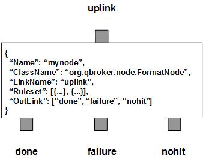

FormatNode formats JMS Message body and header fields according to rulesets. Based on the rulesets, it filters messages into three outlinks: done for all the formatted messages, nohit for those messages do not belong to any rulesets, failure for those messages failed in the formatting process.
FormatNode contains a number of predefined rulesets. These rulesets categorize messages into non-overlapping groups. Therefore, each rule defines a unique message group. The ruleset also defines the formatter and its formatting rules for the group. Different groups may have different formatter or different format parameters. Due to JMS specifications, you have to clear user properties before resetting them on a readonly message. You can specify ResetOption in a ruleset so that the message header will be reset for modifications. Its value is 0 for no reset, 1 for optional reset and 2 for guaranteed reset.
Each ruleset has a list of FormatterArgument. A FormatterArgument contains a name specifying what to be formatted and two sets of format operations. The first oeration set lists format templates in the name of Template. The other is the list of substitutions with the name of Substitution. Each Template appends the previous non-empty text to the variable and sets the next initial text for its corresponding Substitutions. If the first template is null, the initial text will be the variable itself. Each Substitution modifies the text before it is appended to the variable. The associations between the Templates and Substitutions are based on their positions. Either Template or Substitution can be null for no action and a place holder. Therefore, you can insert multiple null Templates so that the associated Substitutions will be able to modify the same text in turns. FormatNode will apply all the operations of FormatterArguments on the incoming message in the order of the list. If any of the operations fails, the message will be routed to failure outlink.
If ClassName is not defined in the rule, the rule is for the default formatter. In this case, it also accepts a template via URITemplate for the path to a template file which will be used to format the message body. If URITemplate is defined, the rule will load the template from the file and cache it at its first application to the message. The format result will be set back to the message body. The cache count of templates for the rule will be stored to RULE_PEND. The cache count will be updated when the session times out which is determined by SessionTimeout.
FormatNode also supports customized formatters via plugins. In this case, the full ClassName of the plugin and its FormatterArgument must be well defined in the ruleset. The developer of the plugin formatter is supposed to document the details of FormatterArgument. FormatNode will load the plugin and invokes the method to format the messages of the ruleset.
FormatNode always adds an extra ruleset for the nohit messages. This nohit ruleset is always the first ruleset with the id of 0. On the node level, DisplayMask and StringProperty control the display result of outgoing messages.
You are free to choose any names for the three fixed outlinks. But FormatNode always assumes the first outlink for done, the second for failure and the last for nohit.
Apart from the common properties, there are some implementation specific properties for FormatNode.
| Property Name | Data Type | Requirement | Description | Examples |
|---|---|---|---|---|
| SessionTimeout | integer | optional | timeout in second for a session | 3600 (default: 0) |
The format operation is executed via the pre-defined rulesets. Therefore, the configuration of the rulesets is critical to the operations of FormatNode. Here are complete properties of rulesets for FormatNode.
| Property Name | Data Type | Requirement | Description | Examples |
|---|---|---|---|---|
| Name | alphanumeric with no spaces | mandatory | name of the ruleset | event |
| ResetOption | integer | optional | option to reset properties | 2 (default: 0) |
| URITemplate | string | optional | template for the full path of the template file | /opt/qbroker/cfg/ST/##TempName##.txt |
| URISubstitution | string | optional | text substitution for the full path of the template file | s/\.tmp$/\.txt/ |
| TimeToLive | integer | optional | seconds to expire the cache templates | |
| FormatterArgument | object | optional | list of format operations or configuration data for plugin | see example |
| ClassName | alphanumeric with no spaces | optional | full classname of the plugin formatter | |
| PreferredOutLink | alphanumeric with no spaces | mandatory for bypass only | name of the preferred outlink | bypass |
| JMSPropertyGroup | list | optional | list of pattern groups on properties to select messages | see example |
| XJMSPropertyGroup | list | optional | list of pattern groups on properties to exclude messages | see example |
| PatternGroup | list | optional | list of pattern groups on body to select messages | see example |
| XPatternGroup | list | optional | list of pattern groups on body to exclude messages | see example |
| StringProperty | map | optional | for setting the user properties on the messages | see example |
{
...
"Ruleset": [{
"Name": "bypass",
"PreferredOutLink": "BYPASS",
"JMSPropertyGroup": [{
"JMSType": "^score$"
}]
}],
...
}
where it routes the messages to the outlink of BYPASS.
Here is an example of the default format ruleset.
{
...
"Ruleset": [{
"Name": "syslog",
"JMSPropertyGroup": [{
"type": "^syslog$",
"LogTime": "."
}],
"FormatterArgument": [{
"FieldName": "url",
"Template": ["http://##HostName##:22001/?command=##RequestID##&format=html"]
},{
"FieldName": "JMSTimestamp",
"Template": ["##LogTime## 2010"],
"Substitution": ["s//~=MMM d HH:mm:ss yyyy/e"]
},{
"FieldName": "Ratio",
"Template": ["##Value## / ##Total##"],
"Substitution": ["s//:=eval/e"]
}]
}],
...
}
where FormatterArgument lists three the format operations sequentially. Each
format operation contains FieldName, a list of Template and a list of
Substitution. Upon success, the formatted value will be set into
the property specified by the FieldName. The first operation is obvious. It
just builds the string for the property of uri. The second is to reset
JMSTimestamp of the message by parsing the property of LogTime. This is
one example of Substitution on its ability to convert a text to timestamp.
The third is to evaluate an simple expression and sets the number to the
property of Ratio. The expression is defined via the tempate. It
extracts the numbers from the properties of Value and Total.
The sign of / between two variables specifies the operation between the
two numbers.
Here is an example of a rule with a plugin:
{
...
"Ruleset": [{
"Name": "json",
"ResetOption": "1",
"JMSPropertyGroup": [{
"type": "^syslog$",
"LogTime": "."
}],
"ClassName": "org.qbroker.jms.Msg2Text",
"FormatterArgument": {
"Template": "",
"ResultType": "8"
}
}],
...
}
where the plugin has a public method of format() that is used to format the
incoming message into JSON content and store the JSON to the message body.
Here is an example of FormatNode:
{
"Name": "node_format",
"ClassName": "org.qbroker.node.FormatNode",
"Description": "format messages",
"Operation": "format",
"LinkName": "root",
"Capacity": "6",
"WaitTime": "50",
"DisplayMask": "0",
"Ruleset": [{
"Name": "ap",
"JMSPropertyGroup": [{
"JMSMessageID": "."
}],
"ResetOption": "1",
"FormatterArgument": [{
"FieldName": "FileName",
"Template": ["/www/##body##"],
"Substitution": ["s/^\\/www\\/$//"]
},{
"FieldName": "HostName",
"Template": ["ftp.qbroker.org"]
}]
}],
"OutLink": ["formatted", "failure", "nohit"]
}